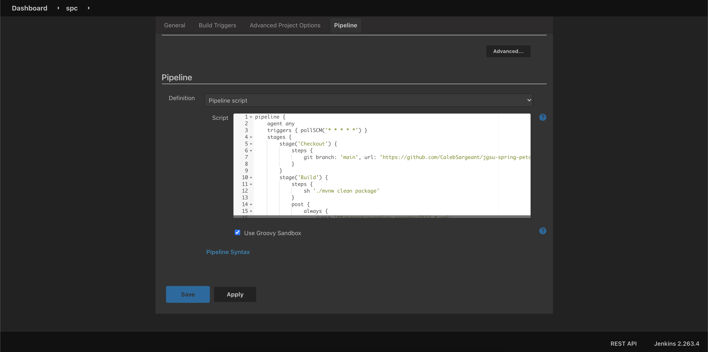
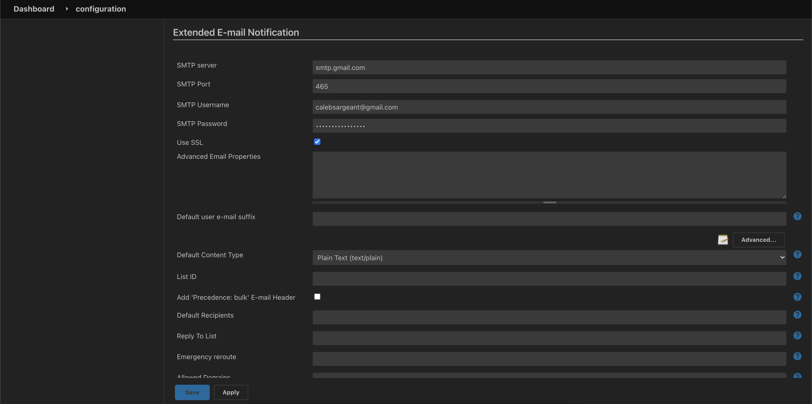
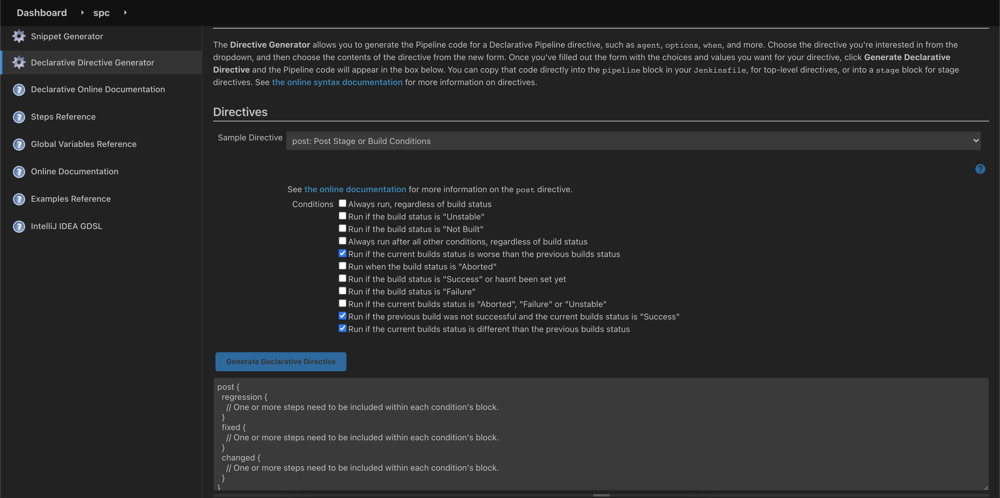
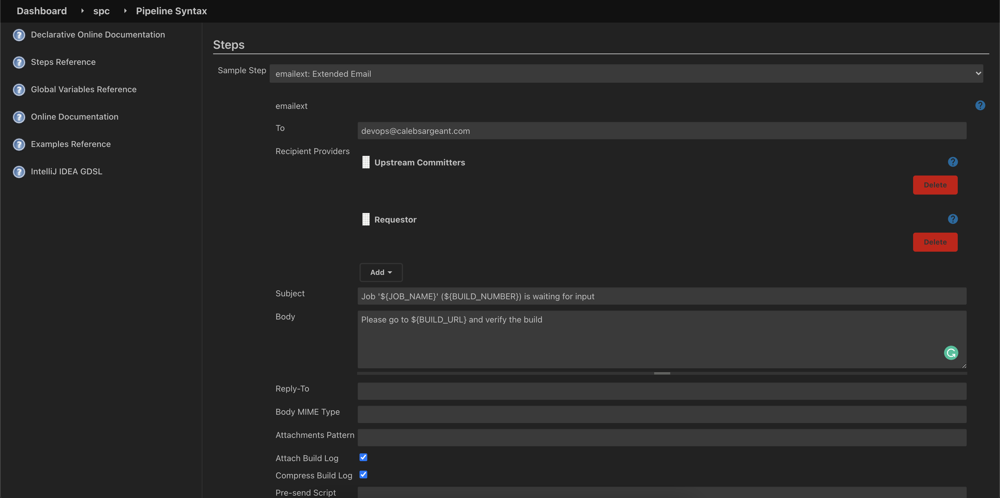

Colocating Jobs and Source Code with Jenkinsfile
View the Pipeline Syntax documentation online:
Download example pipeline: _docs/pipeline.groovy

Adding a trigger to the pipeline

Configuring Email server for Jenkins

Post Declarative Directive generator for regression, fixed, and changed
View the Global Variable Reference

Generating email pipeline syntax

pipeline from single repo - scm
Note
You can create a new item and have Jenkins scan all repos in a GitHub org for Jenkinsfiles and create build processes for each